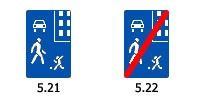

В жилой зоне, то есть на территории, въезды на которую и выезды с которой обозначены знаками 5.21 "Жилая зона" и 5.22 "Конец жилой зоны", движение пешеходов разрешается как по тротуарам, так и по проезжей части. В жилой зоне пешеходы имеют преимущество, однако они не должны создавать необоснованные помехи для движения транспортных средств.

В жилой зоне запрещаются сквозное движение, учебная езда, стоянка с работающим двигателем, а также стоянка грузовых автомобилей с разрешенной максимальной массой более 3,5 т вне специально выделенных и обозначенных знаками и (или) разметкой мест.
При выезде из жилой зоны водители должны уступить дорогу другим участникам движения.
Требования данного раздела распространяются также и на дворовые территории.